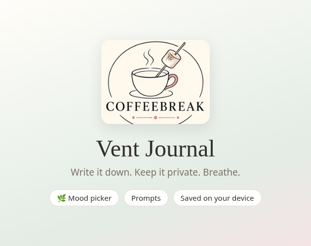

Title: Coffeebreak Vent Journal
Kind of project: Downloadable (pay before you download). Upload: coffeebreak-vent-journal.zip, not played in browser
Pricing: Paid, $5.00 USD, Buy Now
Classification: Tools
Genre: Tool
Tags: journal, diary, wellbeing, gratitude, writing, private, offline, mindfulness, calm, self-care
Short description: A calm, private journal that keeps every entry on your own device
Description:
A calm, private place to write it all down. Every entry is saved in your own browser on your own device. There are no accounts, no servers and nothing is uploaded.
Features
- Write entries with an optional title, word count and automatic draft saving
- Five kinds of entry: Vent, Reflect, Gratitude, Prayer and Free write, each with gentle prompts
- Mood picker with ten moods
- Search every entry, with matching words highlighted, and filter by kind or mood
- Edit, copy or delete past entries, and see simple stats such as words written and your most common mood
- Let it go: clear the page without saving anything
- Breathe tab with a slow guided breathing circle
- Export all entries as a text file, or a backup file you can import later
- Optional PIN screen to keep casual eyes out (a privacy screen, not encryption)
- One single HTML file. Unzip it and open index.html in any modern browser, on phone, tablet or desktop. Works offline
If you are struggling, please reach out. In Australia call Lifeline on 13 11 14, or 000 in an emergency.
Karen O'Brien is a Coffeebrea